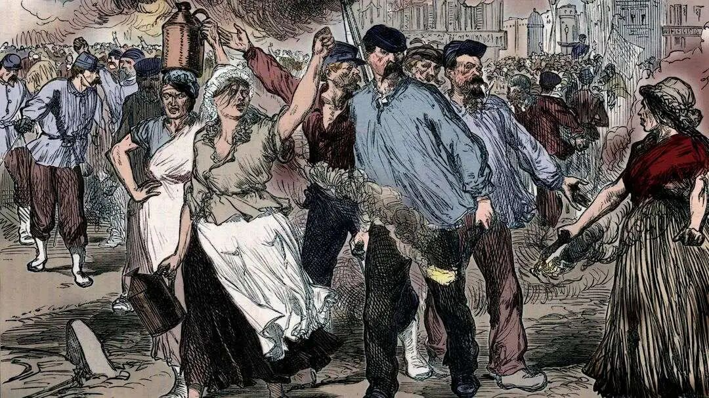
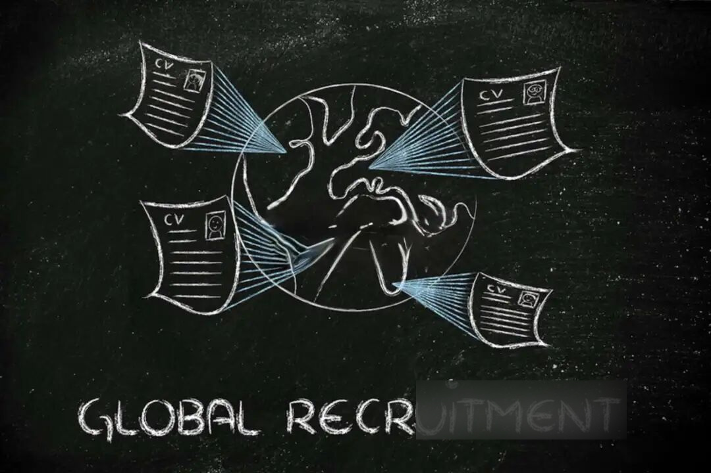

在全球化资本流动编织的精密网络中，那些被视作“沉默齿轮”的劳工群体，正以未被书写的团结姿态，续写着资本主义历史周期中劳资博弈未被终结的篇章。
2021年初夏，长居广东的散文作家塞壬暂停体制内工作，以大龄女工黄红艳的身份进入了东莞市长安镇的工厂流水线。这个百万级人口城镇的众多工业园区中鳞次栉比的，是产品销往全球各地的世界工厂。在那里，她辗转多个工厂，前后工作八十余天，以此经历为素材写成了非虚构作品《无尘车间》。
图1 塞壬《无尘车间》
打工生活中，黄红艳与工友们同吃同住，得以近距离观察当代中国工人阶层这一沉默的大多数——她惊奇地发现，很少有人抱怨工作环境差，反而多数人关心是否有班可加；更重要的是，绝大多数工人安于此阶层的命运，他们的内心“并没有太多来自所谓命运的愤怒以及强烈想要改变命运的意念”。在工厂里，工人们被抽象成庞大机器里的一个个齿轮，全力运转，但静默无声。
沉默取代愤怒，成为工厂中的主旋律，似乎略显诡异。纵观工业革命以来世界经济发展的历史，劳工与资本的斗争向来是一条不可忽视的主线。愤怒的工人阶级曾凭借满腔沸腾的热血赢得资本的妥协、选举的权利、社会制度的调整、甚至天翻地覆的革命。而在当下，这种愤怒似乎正在消弭，东莞的工厂绝非孤例，而是全球劳工运动的缩影。
图2 沉默劳作的工人们
20世纪80年代以来，尽管逆全球化风声不断，但不可否认的是世界已进入全球化的轨道。在这一背景下，社会科学界几乎达成了共识——劳工运动正面临普遍性的、严峻的危机：罢工活动以及其他形式的公开与激进的劳工斗争日渐消退；工会密度不断下降；实际工资减少；工作不稳定性日益增加......美国政治学家佐尔伯格（Aristide Zolberg）认为，与后工业化社会相伴而至的，是工人阶级这个具有显著社会特征的群体事实上的消亡。
然而，从20世纪90年代晚期开始，工人阶级又开始用新的方式表达他们的愤怒。新的劳工运动在日益高涨，其中最明显的，应属愈演愈烈的针对由全球化引发各种社会动荡的大众反抗运动。1999年11月，世界贸易组织在美国西雅图举行会议，抗议活动的强大力量使得新一轮贸易自由化的启动陷于停滞，其中工人阶级的激进立场似乎在标志美国劳工运动的复兴；2023年1月以来，法国爆发反对养老金和延迟退休改革的抗议活动，全国范围内超百万人参与罢工游行。
这些新近出现的激进主义和运动究竟是新一轮大规模劳工暴动大地震的预言，还是工人阶级被全球化进程彻底瓦解前的回光返照？事实也许比我们想象的更复杂。
史无前例，还是历史周期？
以上两种对于劳工运动未来截然不同的预见，可以归结为同一个问题，即当今全球化进程中劳工运动的失落，是全球化史无前例冲击的结果，还是资本主义历史周期的正常起伏？我们有必要回溯劳工运动的历史以寻求答案。
经济学家卡尔·马克思和卡尔·波兰尼在审视劳工运动时曾不约而同得出结论：劳动力是一种“虚拟的商品”，而任何将个体当成“彼此等同的商品”加以对待的企图，都不可避免地会导致个体的深切不满和反抗。历史上，工业资本主义的扩张在使劳工处境恶化的同时，也在加强他们的力量：这一力量既包括由于工会、政党等集体组织形成而产生的结社性力量，也包括因工人在经济系统中占据重要地位而形成的结构性力量。面对日益强势的工人运动，资本和国家不得不对工人阶级作出妥协让步，建立各种社会契约，如控制失业率、最低工资与最长工时标准、社会保险制度等以保障工人权益；但此类契约的建立又不可避免地造成资本利润率的下降，资本为恢复利润率，又将破坏业已建立的社会契约，加剧劳动力的商品化，从而再次引发工人的反抗。

图3 巴黎公社运动
由此可见，资本主义利润率危机和合法性危机的交替出现构成了劳工运动的历史周期，劳工运动在劳工的去商品化与再商品化、社会契约的建立与打破之间形成周期性的振荡。对工人运动持乐观态度的人有理由认为，当今时代劳工运动的回落，也仅仅是历史周期中一个暂时的低谷。
但更多人的忧虑来自于全球化时代下劳工群体力量的减退。资本家在面对工人运动的冲击时不会甘于妥协和让步，同时也会采取各种生产方面的调整以寻求打破劳资力量的平衡，如将生产转移到劳动力更为顺从和廉价的地区，或是改变生产组织和引进节约劳动力的技术以减少对劳动力的依赖，进而削弱劳工的谈判力量。而第二次世界大战结束后，尤其是80年代以来，生产、劳动、资本的全球化为资本家采取上述措施提供了得天独厚的条件：跨境资本的流通使得全球发展中国家的大量廉价劳动力得以为之所用，新的生产组织形态让成为螺丝钉的工人无足轻重，遍布全球的分散化生产也加剧了劳工联合的困难。劳工运动所面临的危机比以往任何历史时期都显得更加严峻。
即便如此，关于劳工运动未来的争论仍未停止，主要的争论围绕着世界范围内劳工条件的“竞次”（race to the bottom）现象与劳工国际主义两个问题展开。
一场“冲向底线的赛跑”？
劳工运动危机的一种常见解释聚焦于资本的流动。20世纪后期生产性资本的高流动性创造了全球范围内单一的劳动力市场，全世界工人被迫在其中相互竞争。跨国公司通过威胁将生产迁移到其他发展中国家和地区，向劳工运动施加来自其他地区数量庞大的无组织工人的压力，劳工的谈判力量被严重削弱，世界范围内出现了在工资与工作条件方面的“冲向底线的赛跑”（race to the bottom），致使全球劳工的福利状况不断恶化。

图4 全球招聘
但以上“竞次”的观点也有可商榷之处。一方面，全球资本并未如其所预测的那样从高薪地区向低薪地区流动，因为劳动力成本仅仅是影响跨境资本投资决策的一个因素。事实上，即使在全球化如火如荼的21世纪初，大多数外国直接投资（FDI）依然在高收入国家内部流动。中国在改革开放后获得海外资本的青睐，也并非全部因为廉价劳动力：以规划的工业区和市场网络为依托的聚群经济、劳动力良好的健康和受教育状况、较为成熟的交通运输和物流体系以及国内市场的规模，这些条件一同构成了外资在中国投资的强烈动机。不仅如此，随着工人涨薪，市场的规模也会相应扩大，这对于以市场为导向的投资更有吸引力。
退一步讲，某些行业和地区的工业资本的确在流向低工资地区，但这一资本转移的影响并非“竞次”观点预期的那样简单。劳工运动愤怒的呐喊从未因资本的转移而远离：虽然在生产资本撤出的地方，劳工力量受到了削弱，但在资本流入的新地点，新的工人阶级被创造出来并发展壮大。以20世纪的主导产业汽车工业为例，从1936年美国的弗林特到1978年巴西的圣贝尔南多，再到1987年韩国的蔚山，汽车工业资本随廉价劳动力不断迁徙，与此同时新的工人与工会运动如影随形。20世纪七八十年代凭借廉价劳动力所创造的经济奇迹（包括西班牙、巴西、南非和韩国），同时也在这些地区打造了具有战略性地位的新工人阶级，他们发起了根植于不断扩张的大规模生产的新劳工运动，这些运动不仅成功提高了工人工资、改善了工作条件，还在同时期的民主化进程中发挥了重要作用。
劳工国际主义，还是国家保护主义？
有关劳工运动未来讨论的另一个焦点是新的劳工国际主义的出现。全球化的生产造就了世界范围内面对相同跨国公司雇主的劳动力大军，同时也一定程度上冲击了国家的主权：面对国际竞争与全球化的驱动，国家不得不向超越国家的国际或区域性组织及跨国资本让渡部分主权，从而打破了原有的社会契约（包括为本国工人提供的社会福利），使本国工人卷入全球的竞争之中。因此，劳工活动家们意识到，失去国家荫蔽的全球工人必须成立在地理范围上与其跨国公司雇主旗鼓相当的组织，以提升与之谈判的筹码。
图5 国家劳工组织标志
一种观点认为，正是在全球化背景下劳工运动危机的进程中，孕育着新的劳工国际主义的萌芽。全球化弥合了各国工人阶级间的差异，使他们面临共同的对手，世界正加速分化为跨国资产阶级和跨国无产阶级，从而为劳工国际主义提供了客观基础。在这一观点的支持者看来，以1999年11月西雅图反世贸组织示威为代表的反全球化抗议，正是新劳工国际主义出现的预兆。《国家》（The Nation）杂志的一篇社论指出，在西雅图的抗议中，美国劳工采用了“国际主义和团结一致的新措辞”，从而标志着“新型政治的里程碑”。
尽管上述观点展现了新劳工国际主义出现的希望，但仍疑有过分乐观之嫌。实证研究表明，国家之间的不平等而非国家内部的不平等仍占据世界总体收入不平等的主导地位，美国工人与孟加拉工人的处境并不相似，同质的全球工人阶级的出现仍然困难重重。此外，由于国家国际地位的悬殊，并非所有国家的主权都受到了全球化的冲击和削弱，相反，以美国为代表的占据国际政治和经济优势的国家完全可以凭借空前加强的国家主权主导并推进全球化进程，同时为本国工人阶级的福利保有余地以获得选票。对于这些国家的工人来说，最有效的劳工运动战略莫过于向本国政府施加压力，使其建立有利于工人阶级的社会契约。
因此，与其他国家工人相比，强大国家工人的政治经济地位是显著不同的，他们的斗争显然可以影响本国政府乃至超越国家的制度和组织，以符合世界工人利益的方式，成为劳工国际主义的排头兵。但与此同时，南北收入差距的持续扩大透露出另一个问题：强大国家工人旨在改革、超越国家制度的斗争，是迈向全球工人阶级形成的关键一步，还是新形式的国家保护主义抬头的迹象？
事实上，参加西雅图世贸组织会议的第三世界代表与示威活动并非处于同一战线，他们将此次示威视为发达国家劳工与政府结盟的国家贸易保护主义行为。此前，第三世界国家一致反对在贸易协议中加入含有更高标准的劳动和环境的社会性条款，他们认为，所加入的这些社会性条款并不是国际上关心第三世界工人福利的表述，而是设置壁垒阻止第三世界出口品进入富裕国家的新方式——是“在理想主义伪装下的贸易保护主义”。
结语：沉默在尖叫
无论是“竞次”还是新劳工国际主义的观点，似乎都无法准确地预见全球化时代下劳工运动的未来。与工业革命相伴而生，持续两百余年，承载无数工人光荣与梦想的劳工运动浪潮在经济史上时而愤怒，时而沉默，至今虽有风雨如晦之意，却远未止息。对于旁观者而言，我们也许不该简单地把劳工运动看作一串数字、一个符号，因为在其背后，是一个个鲜活的生命在为他们所期许的世界摇旗呐喊，而今日的我们，某种程度上也生活在他们所创造的世界中。
《无尘车间》中，塞壬记述了一个令她印象深刻的细节：初入工厂的她因一次迟到而面临失去每月70元全勤奖的风险，在作者看来不值一提的一笔钱，却让整个车间的工友为她着急了一整个下午——他们都觉得这70块钱必须争取回来。最后，曾与作者有过多次争吵的拉长（生产线的管理者）主动塞给她一张请假单，帮她免除了这笔扣款。70元，在生产线上的工人看来是他们劳动的尊严和血汗，值得全力的争取——在这场女工黄红艳所面临的危机中，即使有过摩擦和过节的工人们也主动团结在一起，完成了一次对制度和资本无声的反抗。
那一刻，流水线上忙碌的工人们抬起头来，他们的沉默在愤怒地尖叫。
参考文献
[^1]Silver, Beverly J., and Sahan Savas Karatasli. "Historical dynamics of capitalism and labor movements." The Oxford handbook of social movements (2015): 133-145.
[^2]The Editors."Democracy Bites the WTO." The Nation(1999)，December 27，pp.3-4.
[^3]Zolberg, Aristide R. "Response: Working-class dissolution." International Labor and Working-Class History 47 (1995): 28-38.
[^4]贝弗里•J.西尔弗.劳工的力量：1870年以来的工人运动与全球化[M].张璐,刘建洲译.北京：社会科学文献出版社，2016.
[^5]塞壬.无尘车间.南京：译林出版社，2023.